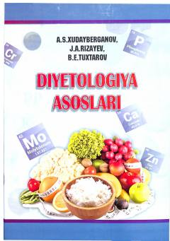

DATibbiyot OTM talabalari va mutaxassislar uchun mo'ljallangan diyetologiya bo'yicha fundamental darslik.
Ushbu darslikda diyetologiyadan ta'lim berishning rivojlangan davlatlar tajribasi va O'zbekiston Respublikasining tegishli qarorlari asosida qabul qilingan zamonaviy o'quv dasturlariga muvofiq ma'lumotlar keltirilgan. Kitob tibbiyot OTM talabalari, diyetologlar, nutritsiologlar hamda tibbiyot xodimlari uchun mo'ljallangan bo'lib, to'g'ri ovqatlanish va parhez terapiyasi masalalarini qamrab oladi.